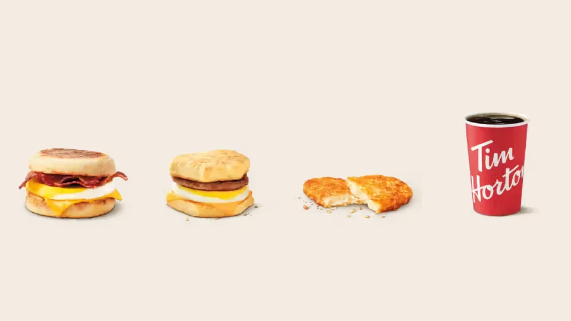

Unofficial fan guide - not affiliated with Tim Hortons
A&W wins most taste tests. Tims is cheaper and has far more choice. Here is the full breakfast comparison.
Full Menu / Blog / Tim Hortons vs A&W Breakfast

A&W wins most breakfast taste tests, and Tim Hortons wins on price and choice. A Tim Hortons Bacon Breakfast Sandwich is listed at $4.49, and an A&W Bacon & Egger cost $4.99 in an April 2026 test. Both chains crack fresh Canadian eggs and serve breakfast all day.
Tim Hortons and A&W are two of the biggest breakfast stops in Canada. Tim Hortons has about 3,900 Canadian restaurants and built its mornings on coffee and donuts. A&W has more than 1,000 and is better known for burgers. Its breakfast is a short menu built around one sandwich family, the Eggers.
This comparison uses our own Tim Hortons menu prices (Canadian dollars, before tax, October 2026), the official Tim Hortons nutrition guide, A&W Canada's press releases, and four published taste tests from Narcity, MTL Blog and Daily Hive.
| Tim Hortons | A&W | |
|---|---|---|
| Signature sandwich | Bacon or Sausage Breakfast Sandwich | Bacon & Egger or Sausage & Egger |
| Bread | English muffin or homestyle biscuit | English muffin or sesame seed bun |
| Bacon sandwich price | $4.49 | $4.99 (April 2026 test) |
| Hash brown price | $2.19 | $2.59 (June 2026 test) |
| Bacon sandwich calories | 330 (English muffin) | About 380 (English muffin) |
| Eggs | Freshly cracked Canadian Grade A since February 2025 | Freshly cracked, from Canadian farms |
| All-day breakfast | Since July 25, 2018, at participating restaurants | Since February 27, 2017, at all restaurants |
| Coffee | Original Blend, from $1.59 | Pret Organic Classic Blend |
| Restaurants in Canada | About 3,900 | More than 1,000 |
| Best for | Price, variety, coffee and a donut | The best single sandwich and hash brown |
Tim Hortons is cheaper, by about 50 cents on a sandwich and 40 cents on a hash brown. Our Tim Hortons menu lists the Bacon Breakfast Sandwich and Sausage Breakfast Sandwich at $4.49 each. Narcity paid $4.99 for an A&W Bacon & Egger in April 2026.
| Item | Tim Hortons (CAD) | A&W (CAD) |
|---|---|---|
| Bacon and egg sandwich | $4.49 | $4.99 |
| Hash brown | $2.19 | $2.59 |
| Sandwich and hash brown | $6.68 | $7.58 |
| Cheapest egg sandwich | $3.99 (Egg & Cheese) | Not priced in the tests |
| Cheapest breakfast item | $2.19 (Hashbrown) | $2.59 (hash brown) |
The Tim Hortons column is our listed menu price before tax. The A&W column is what Narcity's testers paid in April and June 2026. Prices move between restaurants at both chains. In the same April test, Narcity paid $5.49 for a Tim Hortons bacon sandwich on a biscuit, a dollar above our listed price.
The cheapest full breakfast is at Tim Hortons. A Hashbrown and a medium coffee cost about $4 before tax, and a Simply Sausage Sandwich is $2.99. A&W narrows the gap with limited-time deals. In November 2024 it sold a Bacon & Egger with a small coffee for $4.99.
A&W's does, according to most published tests. We found three Canadian taste tests that scored both chains' breakfast sandwiches. A&W finished ahead in two, and Tim Hortons won one.
| Taste test | Tim Hortons | A&W | Ahead |
|---|---|---|---|
| Narcity, April 2026 (bacon and egg, 5 chains) | 3rd, 3.5/5 | 1st, 4.5/5 | A&W |
| MTL Blog, November 2023 (sausage and egg, 3 chains) | 1st, 5/5 | 3rd, 3/5 | Tim Hortons |
| Daily Hive, September 2023 (7 chains) | 5th | 3rd | A&W |
| Narcity, June 2026 (hash browns, 4 chains) | 4th, 5.5/10 | 2nd, 9/10 | A&W |
Count the hash brown test and A&W leads three to one. The table is our own summary of the four articles. Each test was one writer's order at one restaurant, so treat it as a pattern and not as proof.
A&W's Bacon & Egger is the stronger bacon sandwich. Narcity's Lauren DiBenedetto ranked it first of five chains and wrote that "this win is earned through sheer quality." She said "the egg is present without being overwhelming, and the taste is fresh." Tim Hortons placed third with 3.5/5, level with McDonald's on score.
Tim Hortons has the better sausage sandwich in the one test that tried it. MTL Blog's Mike Chaar gave the Tim Hortons Sausage Breakfast Sandwich 5/5 in November 2023 and picked it over A&W and McDonald's. He scored the A&W Sausage & Egger 3/5 because of "an overpowering spice that took away from the overall experience." If you like a peppery sausage patty, that may be a point in A&W's favour.
The bread is where the two menus differ most. Tim Hortons offers an English muffin or a homestyle biscuit. A&W offers a toasted English muffin or a sesame seed bun. Narcity called the Tims biscuit "easily the best choice" there, "buttery, slightly crumbly" and more substantial. The biscuit also adds 80 calories over the English muffin.
Daily Hive's 2023 ranking explains the A&W appeal differently. It placed the Eggers third of seven chains and called them "among the greasiest and saltiest, which is probably why we love them." The same list put Tim Hortons fifth and said its classic sandwich "is just okay."
A&W has the better hash brown, and Tim Hortons has the cheaper one. In Narcity's June 2026 test of four chains, A&W scored 9/10 for "great texture contrast," crispy outside and soft inside. It finished second, half a point behind McDonald's.
Tim Hortons came last with 5.5/10. Writer Alyssa Wiens found it had "a more consistent soft texture throughout" and arrived lukewarm. It was also the cheapest of the four at $2.19, compared with $2.59 at A&W. An older test disagrees: MTL Blog preferred the Tims hash brown in 2023 for "a bit more of a satisfying crunch." Freshness on the day seems to decide it.
Tim Hortons is lighter on every item we could match. A Tim Hortons Bacon English Muffin has 330 calories, and an A&W Bacon & Egger on an English muffin has about 380. The gap is biggest on the hash brown: 120 calories at Tims and about 180 at A&W.
| Item (on English muffin) | Tim Hortons | A&W |
|---|---|---|
| Egg and cheese | 270 cal, 14 g protein | About 350 cal, 17 g protein |
| Bacon, egg and cheese | 330 cal, 17 g protein | About 380 cal, 18 g protein |
| Sausage, egg and cheese | 450 cal, 19 g protein | About 510 cal, 24 g protein |
| Hash brown | 120 cal | About 180 cal |
The Tim Hortons figures come from its official Canadian nutrition guide (August 2025). The A&W figures come from third-party nutrition trackers, because A&W's own nutrition page did not load for us. Treat the A&W numbers as close estimates and check A&W's site if you count calories strictly.
A&W's sandwiches are bigger, so they carry more protein. The Sausage & Egger has about 24 g, the most of any sandwich here. Per dollar the two are close. The A&W Sausage & Egger gives about 4.8 g of protein per dollar and the Tims sausage sandwich about 4.2 g. On bacon, Tims is slightly ahead at 3.8 g to 3.6 g. Our Tim Hortons breakfast menu lists calories, protein and sodium for every item.
Yes, both crack real eggs in the restaurant. A&W has advertised a freshly cracked egg in its Eggers for years. It says the eggs come from Canadian farms, from hens fed a vegetarian diet with no animal by-products. Its 2017 all-day breakfast release also said its bacon and sausage came from pork raised without antibiotics.
Tim Hortons caught up more recently. Since February 6, 2025, participating restaurants have cracked 100% Canadian Grade A eggs for their scrambled-egg items. Both chains melt cheese over the egg, and A&W uses cheddar. Our Tim Hortons ingredients guide covers egg, dairy and meat sourcing.
Tim Hortons has the bigger breakfast menu. A&W's is short: the Bacon & Egger, Sausage & Egger and Cheese & Egger, a Breakfast Wrap, a plated Classic Bacon & Eggs and hash browns. Each Egger comes on an English muffin or a bun.
Tim Hortons lists 13 breakfast items from $2.19 to $5.59. Beyond the classic sandwiches, it has the Farmer's Breakfast Wrap, Scrambled Egg Loaded Wraps and Boxes, Omelette Bites, the Bagel BELT and a Spinach & Feta Savoury Egg Pastry. You can also add a donut, a muffin or Timbits, which A&W does not sell.
Tim Hortons has the wider and cheaper coffee menu, and A&W has the organic one. Since September 23, 2024, every A&W in Canada has brewed Pret A Manger's Organic Classic Blend, a medium roast made from 100% Arabica beans. Before that, A&W served organic, Fair Trade Van Houtte coffee.
Tim Hortons brews its 100% Arabica Original Blend from $1.59 for a small to $2.35 for an extra large, with Dark Roast and decaf beside it. It also makes lattes, cappuccinos, cold brew and Iced Capps, which A&W's breakfast menu does not match. See our Tim Hortons coffee menu for prices by size.
Both do, and A&W's offer is broader. A&W has served its full breakfast menu all day at every Canadian restaurant since February 27, 2017. It tested the idea at 40 restaurants in early 2016. President Susan Senecal said the response "was tremendous, particularly from millennials."
Tim Hortons launched "Breakfast Anytime" across Canada on July 25, 2018, at participating restaurants. Sandwiches on a biscuit or English muffin and hash browns are available all day where a restaurant takes part. Some items are morning-only. The Scrambled Egg Loaded Wraps were listed from 4 a.m. to 11 a.m. at launch. Check your restaurant in the app, or see our Tim Hortons hours page.
Tim Hortons is far easier to find. It has about 3,900 restaurants in Canada, and A&W has more than 1,000. A&W is still Canada's second-largest burger chain, behind McDonald's, so most cities and highway stops have one.
A&W in Canada is a separate company from A&W in the United States. It opened its first Canadian restaurant in Winnipeg in 1956, was sold to Unilever in 1972 and has been Canadian-owned since a management buyout in 1995. Its head office is in North Vancouver. That is why the Eggers and the all-day breakfast are Canadian menu items.
Comparing Tims with other chains? See Tim Hortons vs McDonald's coffee, Tim Hortons vs Starbucks and Tim Hortons vs Second Cup.
Most published taste tests say yes for the sandwich. A&W finished ahead of Tim Hortons in Narcity's April 2026 test and Daily Hive's 2023 ranking, while MTL Blog preferred Tim Hortons in 2023. Tim Hortons is cheaper and has more choice.
Yes, by a small margin. A Tim Hortons Bacon Breakfast Sandwich is listed at $4.49 and a Hashbrown at $2.19. Narcity paid $4.99 for an A&W Bacon & Egger and $2.59 for an A&W hash brown in 2026.
Yes. A&W has served its breakfast menu all day at every Canadian restaurant since February 27, 2017. That includes the Bacon & Egger, Sausage & Egger, Cheese & Egger, Breakfast Wrap and hash browns.
A Bacon & Egger is A&W Canada's bacon breakfast sandwich. It has a freshly cracked egg, melted cheddar and smoked bacon on a toasted English muffin or a sesame seed bun.
The Tim Hortons sandwich. A Tim Hortons Bacon English Muffin has 330 calories, and an A&W Bacon & Egger on an English muffin has about 380. The A&W figure comes from third-party nutrition trackers.
A&W, in the most recent test. Narcity scored the A&W hash brown 9/10 and the Tim Hortons one 5.5/10 in June 2026. The Tim Hortons hash brown was cheaper, at $2.19 against $2.59.
A&W Canada serves Pret A Manger's Organic Classic Blend. It is a medium roast made from 100% Arabica beans, and it has been at every Canadian A&W since September 23, 2024.
No. A&W Canada has been separate from the American chain since Unilever bought it in 1972, and it has been Canadian-owned since 1995. The menus differ, and the Eggers are Canadian items.
Yes. A&W Canada lists a Breakfast Wrap on its all-day breakfast menu. Tim Hortons offers more wrap choices, including the Farmer's Breakfast Wrap and the Scrambled Egg Loaded Wraps.
A&W's sandwiches have a little more protein because they are bigger. The Sausage & Egger has about 24 g, compared with 19 g in a Tim Hortons Sausage English Muffin. The Tim Hortons Sausage & Bacon Farmer's Wrap has 25 g.
Tim Hortons began cracking 100% Canadian Grade A eggs in participating restaurants on February 6, 2025. They are used in its scrambled-egg breakfast items.
This is an independent, unofficial guide. It is not affiliated with, endorsed by, or sponsored by Tim Hortons, Restaurant Brands International or A&W Food Services of Canada. Tim Hortons prices come from our menu pages (Canadian dollars, before tax, as of October 2026). A&W prices are what taste testers paid in 2026, and A&W calories come from third-party nutrition trackers. Both vary by restaurant. See Sources.